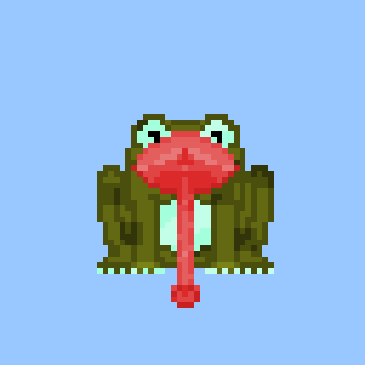

Loading staked frogs…
Staking overview
Every frog currently relaxing in the pond
Filter the roster of staked frogs, sort by rarity rank or staking duration, and inspect layered artwork without leaving the dashboard.

Track staking age with animated progress bars and accurate owner labels.